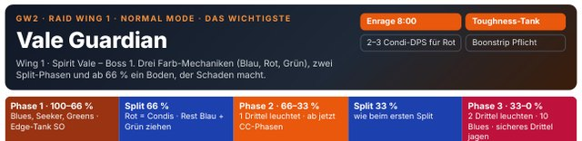
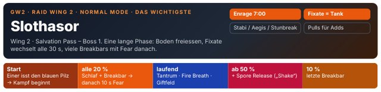
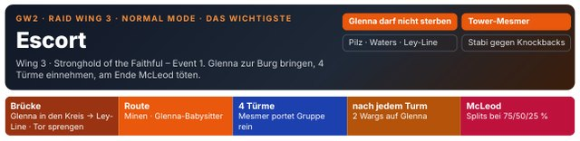
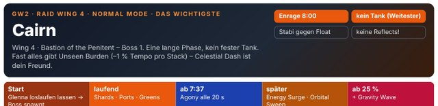
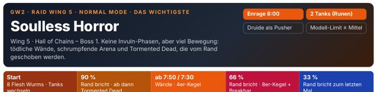
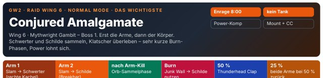
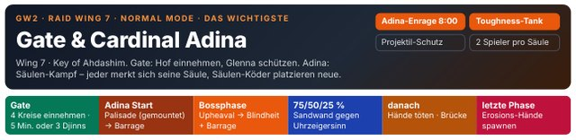
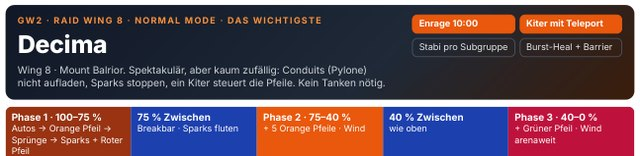

Guild Wars 2 · Guides
Raids
Alle Raid-Wings mit jedem Boss (10 Spieler). Ein Guide pro Wing: zu jedem Boss erst das Wichtigste, dann die Details zum Nachschlagen – bei Bossen mit Challenge Mode zusätzlich, was im CM neu ist. Am Ende Klassen, Rollen und Klassentipps.

Raid
Wing 1 · Spirit Vale
Vale Guardian · Gorseval · Sabetha
Blues und Splits beim Vale Guardian, World Eater als DPS-Check bei Gorseval, Kanoniere und Flamewall bei Sabetha.
- Blues ausweichen
- DPS-Check Gorseval
- Kanoniere festlegen

Raid
Wing 2 · Salvation Pass
Slothasor · Bandit Trio · Matthias Gabrel
Giftfelder und Pilze bei Slothasor, Käfig schützen im Bandit Trio, Reflects und Corruption bei Matthias.
- Gift nie in die Gruppe
- Käfig schützen
- Reflects bei Matthias

Raid
Wing 3 · Stronghold of the Faithful
Escort · Keep Construct · Twisted Castle · Xera
Glenna durchbringen, Keep Construct mit Burst auf den Kern, Madness im Twisted Castle und Bubble-Timing bei Xera.
- Glenna schützen
- Kern-Burst
- Bubble bei Xera

Raid
Wing 4 · Bastion of the Penitent
Cairn · Mursaat Overseer · Samarog · Deimos
Celestial Dash bei Cairn, Spikes und Rollen bei Mursaat Overseer, CC bei Samarog, Hand-Kiter bei Deimos – plus was in den CMs neu ist.
- inkl. CMs
- Dash & Stabi
- Hand-Kiter

Raid
Wing 5 · Hall of Chains
Soulless Horror · River of Souls · Statues of Grenth · Dhuum
Wände und Tank-Wechsel beim Soulless Horror, Desmina eskortieren, drei Statuen und Greens bei Dhuum – plus Soulless Horror CM.
- Wände = Tod
- Desmina eskortieren
- Greens bei Dhuum

Raid
Wing 6 · Mythwright Gambit
Conjured Amalgamate · Twin Largos · Qadim
Schwerter und Schilde bei der Conjured Amalgamate, Zeitlimit bei den Twin Largos, Kiter, Lampe und Pyres bei Qadim – plus Largos CM.
- Power-Burst
- Zeitlimit Largos
- Kiter & Lampe

Raid
Wing 7 · Key of Ahdashim
Cardinal Adina · Cardinal Sabir · Qadim the Peerless
Säulen und Blindness bei Adina, Flash Discharge als CC bei Sabir, Pylone brechen bei Qadim the Peerless.
- Projektil-Schutz
- CC zur richtigen Zeit
- Pylon-Kiter

Raid
Wing 8 · Mount Balrior
Decima · Greer · Ura
Sparks und Pfeile bei Decima, Power oder Condi bei Greer, Bloodstone-Splitter und viel CC bei Ura.
- Sparks = Wipe
- Power oder Condi
- viel CC bei Ura
Mechaniken nach den Guides von Hardstuck, Klassendaten von GW2 Wingman.